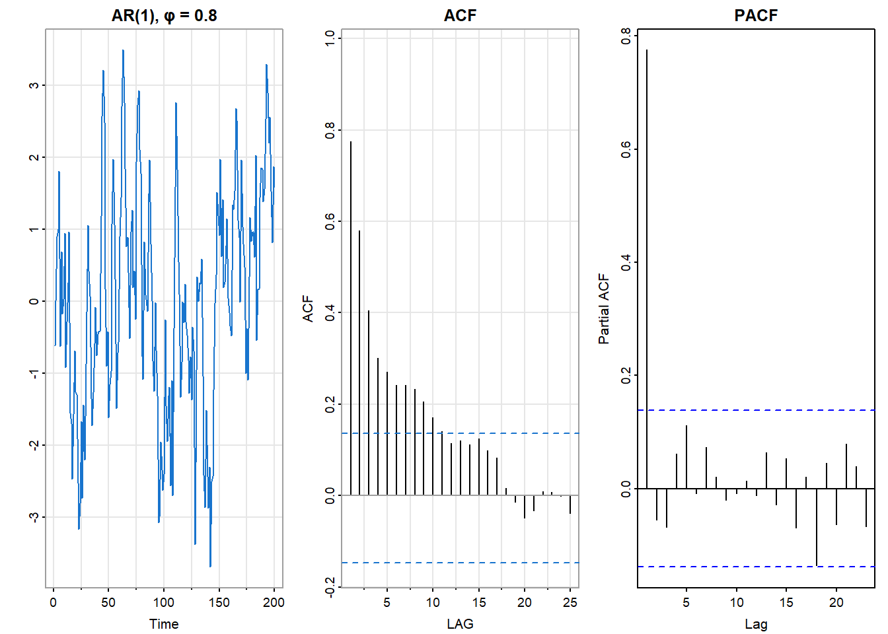
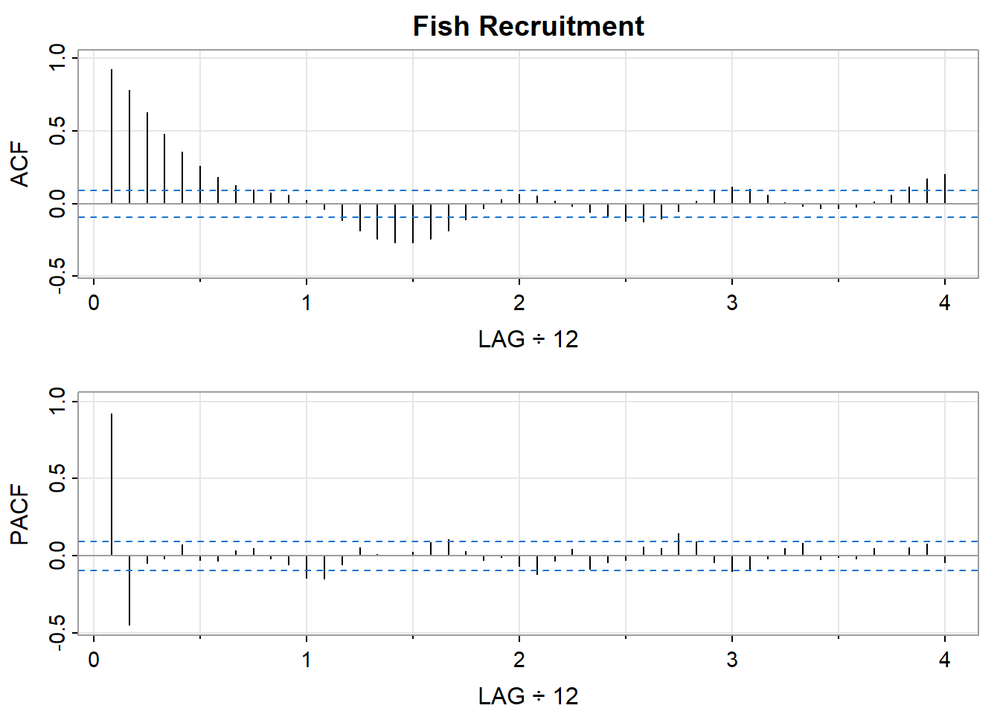
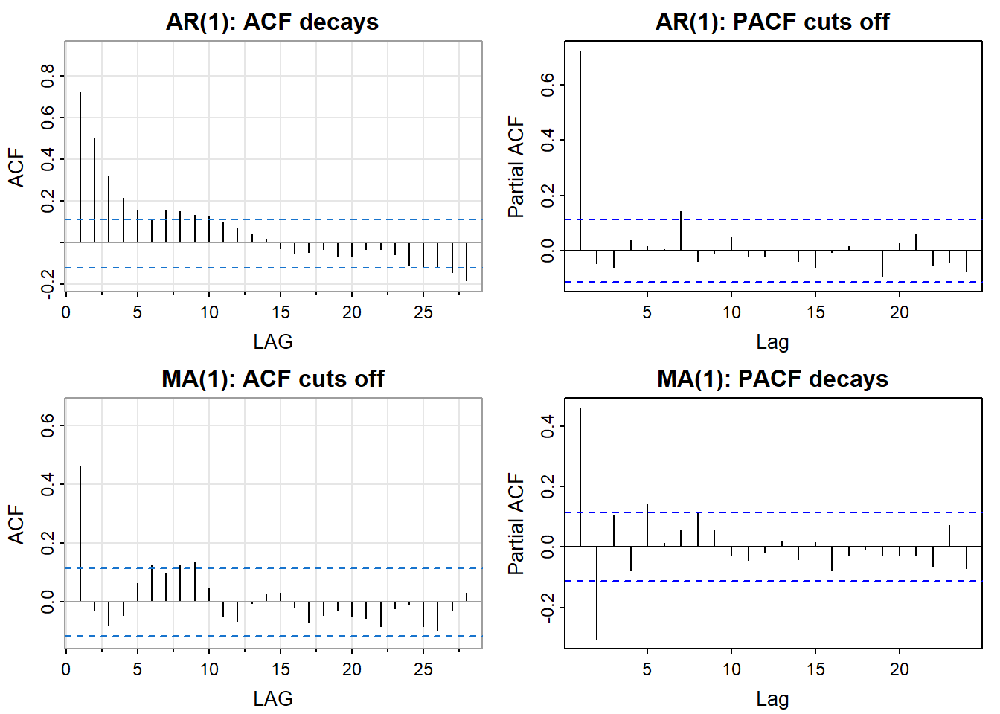
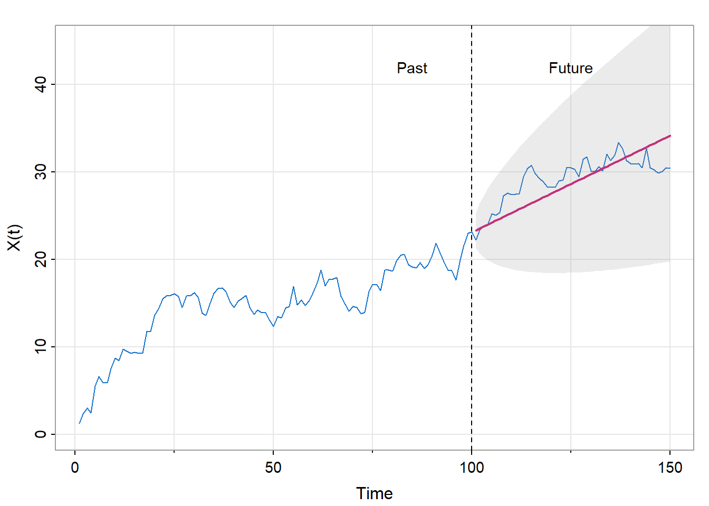
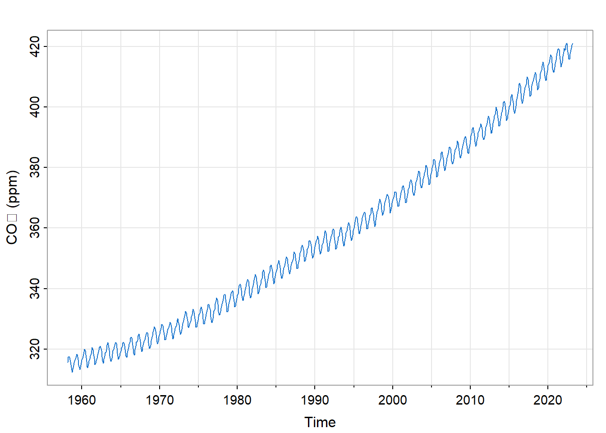
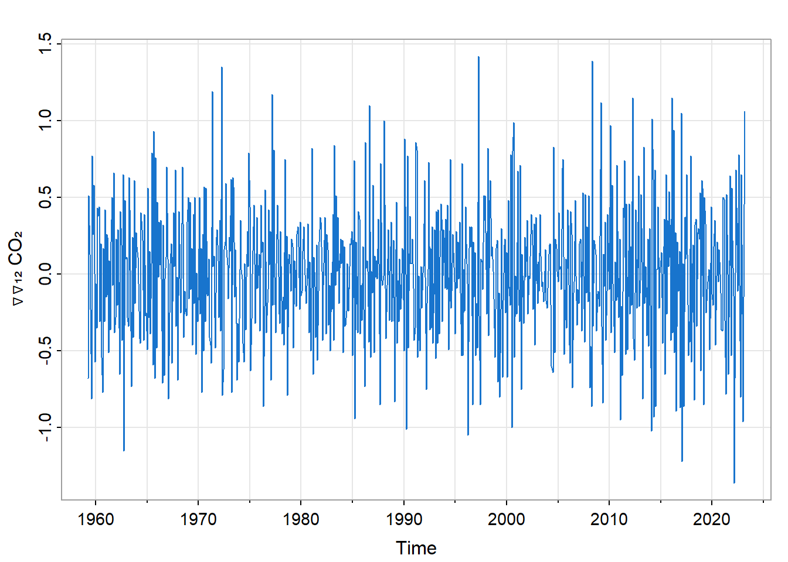
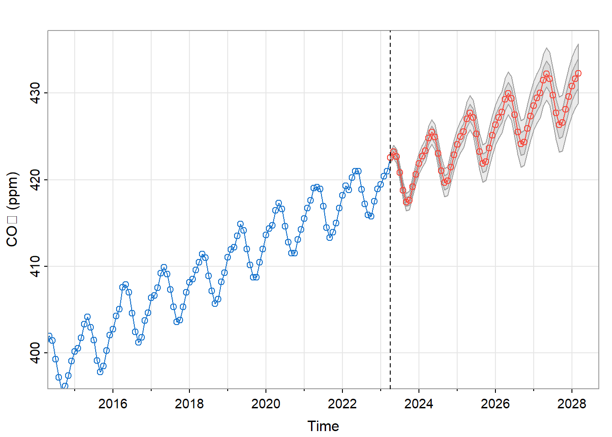
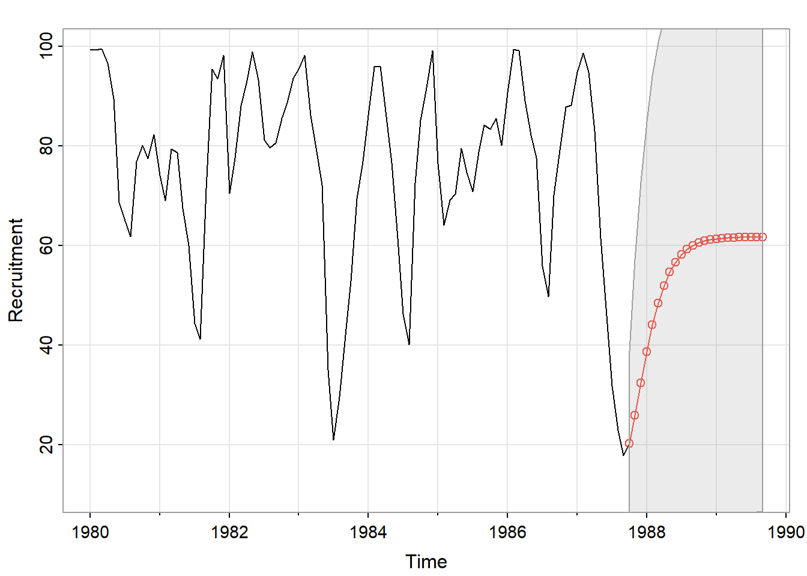

13 Time Domain Methods
13.1 Introduction
Chapter 12 established that time series data have memory—successive observations are dependent, not independent—and that this dependence can be characterized through the autocorrelation function (ACF) and partial autocorrelation function (PACF). We saw that the patterns in these diagnostic plots reveal the structure of the underlying process.
This chapter shows how to exploit that structure for forecasting. Given observations up to the present, what should we expect tomorrow, next quarter, next year? This is the archetypal decision-support application of time series analysis.
The key insight is simple: if the past predicts the future, we should use the past to make that prediction. The autocorrelation structure tells us how to weight past observations. Strong recent dependence means recent values matter most; periodic structure means values from the same season matter; long memory means the distant past remains informative.
We develop this insight through a family of models—autoregressive (AR), moving average (MA), and their combinations (ARMA, ARIMA, SARIMA)—that translate ACF and PACF patterns into explicit forecasting equations. The models are linear: they express the current value as a weighted combination of past values and past random shocks. Despite this simplicity, they capture a wide range of real-world behavior and remain the workhorses of time series forecasting.
13.1.1 Chapter Roadmap
We proceed as follows:
Building Blocks: We introduce the operators and notation—back-shift, differencing, AR and MA polynomials—that provide a compact language for time series models.
Autoregressive Models: AR models express the current value as a function of past values. Their diagnostic signature: the PACF cuts off.
Moving Average Models: MA models express the current value as a function of past random shocks. Their diagnostic signature: the ACF cuts off.
Model Identification: We consolidate the ACF/PACF patterns that guide model selection—the diagnostic fingerprint that connects Chapter 12’s tools to this chapter’s models.
ARMA Models: Combining AR and MA components often achieves parsimony—a simple model that captures complex structure.
Non-Stationary Models: ARIMA models handle trends and other non-stationarities through differencing.
Seasonal Models: SARIMA models capture periodic patterns—annual cycles, quarterly seasonality—that pervade economic and environmental data.
Forecasting: We develop the prediction equations, prediction intervals, and the key insight that uncertainty grows with forecast horizon.
Exponential Smoothing: This widely-used forecasting method has a rigorous statistical foundation as the optimal forecast for a particular ARIMA model.
The Modeling Workflow: We outline the practical cycle of identification, estimation, and diagnostic checking that guides applied work.
Throughout, we maintain the dual perspective: these models serve prediction (decision support), but effective prediction rests on understanding why the models work and when they apply.
13.2 Building Blocks
All time domain models build from a small set of components. We introduce them here for reference.
13.2.1 White Noise
The baseline is white noise: a sequence \(\{W(t)\}\) of uncorrelated random variables with constant mean (typically zero) and constant variance \(\sigma_W^2\). We write \(W(t) \sim wn(0, \sigma_W^2)\).
White noise has no memory—knowing \(W(t)\) tells you nothing about \(W(s)\) for \(s \neq t\). It is the “raw material” from which correlated processes are built by filtering.
13.2.2 The Back-Shift Operator
The back-shift operator \(\mathcal{B}\) shifts a process one time unit into the past:
\[\mathcal{B}X(t) = X(t-1)\]
Repeated application gives \(\mathcal{B}^k X(t) = X(t-k)\). This notation enables compact representation of models involving multiple lags.
13.2.3 The Differencing Operator
The differencing operator \(\nabla\) computes changes:
\[\nabla X(t) = X(t) - X(t-1) = (1 - \mathcal{B})X(t)\]
Differencing removes linear trends. Higher-order differencing \(\nabla^d\) (applying \(\nabla\) repeatedly \(d\) times) removes polynomial trends of degree \(d\).
Seasonal differencing \(\nabla_s\) compares each observation to the same season in the previous cycle:
\[\nabla_s X(t) = X(t) - X(t-s)\]
where \(s\) is the seasonal period (e.g., \(s = 12\) for monthly data with annual seasonality).
13.2.4 AR and MA Polynomials
Models are expressed using polynomials in the back-shift operator.
The AR polynomial of order \(p\): \[\phi(z) = 1 - \phi_1 z - \phi_2 z^2 - \cdots - \phi_p z^p\]
The MA polynomial of order \(q\): \[\theta(z) = 1 + \theta_1 z + \theta_2 z^2 + \cdots + \theta_q z^q\]
Applying these polynomials to \(\mathcal{B}\) produces operators that act on time series. For example, \(\phi(\mathcal{B})X(t) = X(t) - \phi_1 X(t-1) - \cdots - \phi_p X(t-p)\).
13.3 Autoregressive Models
Autoregressive models express the current value as a linear function of past values plus a white noise innovation.
13.3.1 AR(1): The Simplest Memory
An AR(1) process takes the form:
\[X(t) = \phi_1 X(t-1) + W(t)\]
where we assume \(E\{X(t)\} = 0\) for simplicity (the mean can be added back). The current value is a fraction \(\phi_1\) of the previous value, plus a random shock.
Stationarity requires \(|\phi_1| < 1\). If this condition holds, the process does not explode or wander off to infinity. When \(\phi_1 > 0\) (the typical case), high values tend to follow high values; when \(\phi_1 < 0\), the process alternates above and below the mean.
The autocorrelation function has a simple form:
\[\rho(h) = \phi_1^{|h|}\]
The correlation at lag \(h\) is the AR coefficient raised to the \(|h|\) power—geometric decay.
The partial autocorrelation function is even simpler:
\[\phi_{hh} = \begin{cases} \phi_1 & h = 1 \\ 0 & h > 1 \end{cases}\]
The PACF cuts off after lag 1. This is the diagnostic signature of AR(1).
Figure 13.1 shows a simulated AR(1) process with \(\phi_1 = 0.8\). The series shows persistence—runs of high and low values—but repeatedly returns toward the mean. The ACF decays geometrically. The PACF has a single significant spike at lag 1, then drops to near zero.
13.3.2 AR(p): Longer Memory
An AR(p) process depends on \(p\) past values:
\[X(t) = \phi_1 X(t-1) + \phi_2 X(t-2) + \cdots + \phi_p X(t-p) + W(t)\]
In operator notation: \[\phi(\mathcal{B})X(t) = W(t)\]
Stationarity requires that all roots of the polynomial \(\phi(z)\) lie outside the unit circle (have magnitude greater than 1). This ensures the process doesn’t explode.
Causality is guaranteed by the same condition: the process can be expressed as a convergent sum of current and past white noise values.
The diagnostic signature generalizes from AR(1):
- ACF: Decays gradually—exponentially, or as a damped sinusoid if complex roots are present
- PACF: Cuts off after lag \(p\)
The PACF cutoff identifies the order. If the PACF is significant at lags 1 through \(p\) and near zero thereafter, an AR(p) model is indicated.
13.3.3 Example: Fish Recruitment
The recruitment series (astsa::rec) measures the abundance of new fish entering a commercial fishery. Figure 13.2 shows its ACF and PACF.

The ACF shows damped oscillation—the signature of complex roots in an AR process. The PACF has significant values at lags 1 and 2, then cuts off. This pattern suggests an AR(2) model. We will fit this model and use it for forecasting later in the chapter.
13.4 Moving Average Models
Moving average models express the current value as a linear function of current and past random shocks.
13.4.1 MA(1): Dependence Through Shocks
An MA(1) process takes the form:
\[X(t) = W(t) + \theta_1 W(t-1)\]
The current value depends on the current shock and the previous shock. Unlike AR models, where dependence propagates indefinitely through time, MA models have finite memory—observations more than \(q\) time units apart are uncorrelated.
The autocorrelation function:
\[\rho(h) = \begin{cases} 1 & h = 0 \\ \frac{\theta_1}{1 + \theta_1^2} & h = \pm 1 \\ 0 & |h| > 1 \end{cases}\]
The ACF cuts off after lag 1—the diagnostic signature of MA(1), and the opposite pattern from AR(1).
The PACF, in contrast, decays gradually.
13.4.2 MA(q): The General Case
An MA(q) process:
\[X(t) = W(t) + \theta_1 W(t-1) + \cdots + \theta_q W(t-q)\]
In operator notation: \[X(t) = \theta(\mathcal{B}) W(t)\]
The diagnostic signature:
- ACF: Cuts off after lag \(q\)
- PACF: Decays gradually
13.4.3 Invertibility
There is a subtlety with MA models that doesn’t arise with AR models. Different MA parameter values can produce identical distributions. For example, \(X(t) = W(t) + 0.2W(t-1)\) with \(\sigma_W^2 = 25\) has the same distribution as \(Y(t) = V(t) + 5V(t-1)\) with \(\sigma_V^2 = 1\).
To ensure a unique representation, we require invertibility: all roots of the MA polynomial \(\theta(z)\) must lie outside the unit circle. This condition also ensures that the white noise process can be recovered from the observed series—that we can “invert” the relationship to express \(W(t)\) in terms of current and past values of \(X(t)\).
13.5 Model Identification: The Diagnostic Fingerprint
The ACF and PACF patterns provide a fingerprint for model identification. Table 13.1 summarizes the key signatures.
| Model | ACF | PACF |
|---|---|---|
| AR(p) | Decays gradually | Cuts off after lag \(p\) |
| MA(q) | Cuts off after lag \(q\) | Decays gradually |
| ARMA(p,q) | Decays gradually | Decays gradually |
| White noise | All near zero | All near zero |
The identification strategy:
- If the PACF cuts off at lag \(p\) while the ACF decays → consider AR(p)
- If the ACF cuts off at lag \(q\) while the PACF decays → consider MA(q)
- If both decay gradually → consider ARMA, or check whether differencing is needed

Figure 13.3 illustrates the contrast. The AR(1) process shows gradual ACF decay but a sharp PACF cutoff. The MA(1) process shows the opposite: a sharp ACF cutoff but gradual PACF decay.
In practice, sample ACF and PACF are noisy, and the patterns are not always crisp. The confidence bands (typically \(\pm 1.96/\sqrt{T}\)) help distinguish significant values from sampling variation. When patterns are ambiguous, fitting several candidate models and comparing them via information criteria (discussed below) provides a principled approach.
13.6 ARMA Models
Combining AR and MA components often achieves parsimony—a simple model that captures structure requiring high-order pure AR or MA models.
13.6.1 ARMA(p,q) Definition
An ARMA(p,q) process satisfies:
\[\phi(\mathcal{B})(X(t) - \mu) = \theta(\mathcal{B}) W(t)\]
Expanded:
\[X(t) = \mu + \sum_{j=1}^{p} \phi_j (X(t-j) - \mu) + W(t) + \sum_{k=1}^{q} \theta_k W(t-k)\]
The process depends on both past values (AR part) and past shocks (MA part).
13.6.2 Causal and Invertible Representations
For an ARMA process to be well-defined, we require:
Causality: All roots of \(\phi(z)\) outside the unit circle → the process can be written as a convergent MA(\(\infty\)): \[X(t) - \mu = \sum_{\nu=0}^{\infty} \psi_\nu W(t-\nu)\]
Invertibility: All roots of \(\theta(z)\) outside the unit circle → the white noise can be written as a convergent AR(\(\infty\)): \[W(t) = \sum_{\nu=0}^{\infty} \pi_\nu (X(t-\nu) - \mu)\]
These representations are important for forecasting: the \(\psi\) weights appear in the prediction error formula.
We also require that \(\phi(z)\) and \(\theta(z)\) share no common roots. If they did, the common factor could be canceled, reducing the model to a simpler form.
13.6.3 ARMA Diagnostics
For ARMA(p,q) processes, both the ACF and PACF decay gradually (mixture of exponentials and/or damped sinusoids). This makes order selection less straightforward than for pure AR or MA models. The practical approach is to consider low-order candidates—ARMA(1,1), ARMA(2,1), ARMA(1,2)—and use information criteria to compare.
13.7 Non-Stationary Models
Many real series are non-stationary: they exhibit trends, random-walk behavior, or changing variance. The models developed so far assume stationarity. To handle non-stationarity, we transform the data—typically by differencing—before modeling.
13.7.1 ARIMA(p, d, q)
An ARIMA(p, d, q) model applies ARMA(p, q) to the differenced series:
\[\phi(\mathcal{B}) \nabla^d X(t) = \theta(\mathcal{B}) W(t)\]
The parameter \(d\) indicates the order of differencing:
- \(d = 0\): The series is stationary; this is just ARMA(p, q)
- \(d = 1\): First differences \(\nabla X(t) = X(t) - X(t-1)\) are modeled as ARMA
- \(d = 2\): Second differences are modeled as ARMA
First differencing removes linear trends and handles random-walk-like behavior. Second differencing (rarely needed) removes quadratic trends.
The “I” in ARIMA stands for “integrated”: if \(Y(t) = \nabla X(t)\) follows an ARMA process, then \(X(t)\) is the cumulative sum (integral) of an ARMA process.
13.7.2 Random Walk with Drift
A fundamental non-stationary model is the random walk with drift:
\[X(t) = \alpha + X(t-1) + W(t)\]
This is ARIMA(0, 1, 0) with drift \(\alpha\). Each value equals the previous value plus a constant drift plus a random shock.
Properties:
- The differenced series \(\nabla X(t) = \alpha + W(t)\) is white noise plus a constant
- The variance grows linearly with time: \(\text{Var}(X(t)) = t \sigma_W^2\)
- The optimal forecast is a straight line: \(\hat{X}(t_f + h) = X(t_f) + h\alpha\)

Figure 12.4 shows a simulated random walk with drift and its forecast. The forecast (red line) projects linearly from the last observed value with slope equal to the estimated drift. The prediction intervals (gray band) widen with horizon—reflecting the accumulation of uncertainty as we forecast further ahead.
13.8 Seasonal Models
Many time series exhibit periodic patterns: annual cycles in climate data, quarterly patterns in economic data, weekly patterns in daily data. SARIMA models capture this seasonality.
13.8.1 SARIMA Notation
A SARIMA model combines non-seasonal and seasonal components:
\[\phi(\mathcal{B})\Phi(\mathcal{B}^s) \nabla^d \nabla_s^D X(t) = \theta(\mathcal{B})\Theta(\mathcal{B}^s) W(t)\]
where:
- \(\phi(\mathcal{B})\) and \(\theta(\mathcal{B})\) are the non-seasonal AR and MA polynomials
- \(\Phi(\mathcal{B}^s)\) and \(\Theta(\mathcal{B}^s)\) are the seasonal AR and MA polynomials, operating at the seasonal lag \(s\)
- \(\nabla^d\) is regular differencing
- \(\nabla_s^D\) is seasonal differencing
Notation: ARIMA\((p,d,q) \times (P,D,Q)_s\)
For example, ARIMA\((1,1,1) \times (0,1,1)_{12}\) for monthly data means:
- Non-seasonal: AR(1), one difference, MA(1)
- Seasonal (period 12): no seasonal AR, one seasonal difference, seasonal MA(1)
13.8.2 Example: Atmospheric CO₂
The Mauna Loa CO₂ series (astsa::cardox) shows both a strong upward trend and an annual seasonal cycle.

To model this series, we need both regular differencing (for the trend) and seasonal differencing (for the annual cycle). Figure 13.6 shows the result of applying \(\nabla \nabla_{12}\)—first seasonal differencing, then regular differencing.

The differenced series appears approximately stationary—no obvious trend or seasonal pattern remains. Examination of the ACF and PACF of this differenced series (not shown) suggests an ARIMA\((1,1,1) \times (0,1,1)_{12}\) model.

Figure 12.8 shows the five-year forecast from this model. The forecast captures both the upward trend and the seasonal oscillation, with prediction intervals that widen as we project further into the future.
13.9 Forecasting
We now develop the prediction theory underlying time series forecasting.
13.9.1 The Best Linear Predictor
Given observations \(X(t_0), X(t_0+1), \ldots, X(t_f)\), we seek to predict \(X(t_f + h)\) for horizon \(h \geq 1\). The best linear predictor minimizes mean squared prediction error:
\[\hat{X}(t_f + h) = \arg\min_{a_0 + \sum a_j X(t_f - j)} E\left\{ \left( X(t_f + h) - a_0 - \sum a_j X(t_f - j) \right)^2 \right\}\]
For Gaussian processes, this coincides with the conditional expectation \(E\{X(t_f + h) | X(t_0), \ldots, X(t_f)\}\).
13.9.2 ARMA Forecasting
For ARMA processes, the predictor has a convenient recursive form. The key insight is that future white noise terms have expected value zero: \(E\{W(t_f + k) | X(t_0), \ldots, X(t_f)\} = 0\) for \(k > 0\).
For a one-step-ahead forecast:
\[\hat{X}(t_f + 1) = \sum_{j=1}^{p} \phi_j X(t_f + 1 - j) + \sum_{k=1}^{q} \theta_k \hat{W}(t_f + 1 - k)\]
where \(\hat{W}(t) = X(t) - \hat{X}(t)\) is the estimated innovation (prediction error) from fitting the model.
For longer horizons, we apply the recursion, replacing future unknown values with their forecasts.
13.9.3 Prediction Error
The mean squared prediction error (MSPE) for horizon \(h\) is:
\[\text{MSPE}(h) = \sigma_W^2 \sum_{\nu=0}^{h-1} \psi_\nu^2\]
where the \(\psi_\nu\) are coefficients in the causal (MA\((\infty)\)) representation \(X(t) = \sum_{\nu=0}^{\infty} \psi_\nu W(t-\nu)\).
Key implications:
- One-step error: \(\text{MSPE}(1) = \sigma_W^2\) (just the innovation variance)
- Long-horizon limit: \(\text{MSPE}(h) \to \sigma_X^2\) as \(h \to \infty\) (the unconditional variance)
The MSPE grows with horizon—we cannot predict arbitrarily far ahead with precision.
13.9.4 Prediction Intervals
For Gaussian processes, the \((1-\alpha)\) prediction interval is:
\[\hat{X}(t_f + h) \pm z_{\alpha/2} \sqrt{\text{MSPE}(h)}\]
These intervals widen with horizon, reflecting the fundamental truth that uncertainty accumulates as we forecast further into the future.
13.9.5 Example: Recruitment Forecast
Returning to the recruitment data (astsa::rec), we fit an AR(2) model (suggested by the PACF cutoff at lag 2) and forecast 24 months ahead.

Figure 13.8 shows the forecast. The predicted values (red) oscillate—reflecting the AR(2) structure with complex roots—while converging toward the mean. The prediction intervals widen with horizon, eventually encompassing most of the historical range.
13.10 Exponential Smoothing
Exponential smoothing is a widely-used forecasting method with a long history in business and operations research. It turns out to have a rigorous statistical foundation.
13.10.1 Simple Exponential Smoothing
The simple exponential smoothing recursion:
\[\hat{X}(t+1) = \alpha X(t) + (1-\alpha) \hat{X}(t)\]
Equivalently:
\[\hat{X}(t+1) = \hat{X}(t) + \alpha (X(t) - \hat{X}(t))\]
The forecast is updated by adding a fraction \(\alpha\) (the smoothing parameter) of the most recent prediction error. This gives more weight to recent observations, with weights decaying exponentially into the past.
13.10.2 The ARIMA Connection
Simple exponential smoothing is the optimal forecast for an ARIMA(0,1,1) model:
\[\nabla X(t) = W(t) - \lambda W(t-1)\]
where \(\alpha = 1 - \lambda\). This IMA(1,1) model—integrated moving average—implies that the level of the series drifts as a random walk, with MA(1) structure in the differences.
The connection is important: exponential smoothing is not merely a heuristic but the minimum mean squared error forecast for a particular stochastic process.
13.10.3 Extensions
Holt-Winters methods extend exponential smoothing to handle trend and seasonality by adding state equations for a local slope and seasonal factors. These ETS (Error-Trend-Seasonal) models form an alternative to SARIMA that is particularly popular in business forecasting. For details, see Hyndman and Athanasopoulos (2021).
13.11 The Modeling Workflow
Building a time series model is an iterative process. The classic Box-Jenkins approach cycles through identification, estimation, and diagnostic checking.
13.11.1 Identification
- Plot the series: Look for trend, seasonality, level shifts, changing variance
- Transform if needed: Log transform for proportional variance; differencing for trend
- Check stationarity: The differenced series should fluctuate around a constant level
- Examine ACF and PACF: Identify the pattern (AR, MA, or ARMA)
13.11.2 Estimation
Fit candidate models: Start simple; use the ACF/PACF patterns as a guide
Compare via information criteria:
- AIC: \(-2\log L + 2k\)
- BIC: \(-2\log L + k \log T\)
where \(L\) is the maximized likelihood and \(k\) is the number of estimated parameters.
Lower is better. BIC penalizes complexity more heavily, favoring simpler models.
13.11.3 Diagnostic Checking
- Examine residuals: They should behave like white noise
- ACF near zero at all lags
- No patterns in residual plot
- Ljung-Box test non-significant
Show the code
# Ljung-Box test for residual autocorrelation
stats::Box.test(residuals, lag = 20, type = "Ljung-Box")If residuals show structure, the model hasn’t captured all the dependence. Return to the identification step and consider additional AR or MA terms, or check whether differencing is appropriate.
13.11.4 Iterate
The workflow is cyclical. A first model is rarely perfect. Examine diagnostics, refine, and repeat until residuals are approximately white noise.
13.12 Looking Ahead
This chapter has developed the core time domain methods for time series modeling and forecasting. We have seen that:
- AR models capture dependence on past values; their signature is PACF cutoff
- MA models capture dependence on past shocks; their signature is ACF cutoff
- ARIMA models handle non-stationarity through differencing
- SARIMA models capture seasonal patterns
- Forecasts come with prediction intervals that widen with horizon
- Exponential smoothing is the optimal forecast for a particular ARIMA model
The emphasis throughout has been on prediction—using the past to forecast the future. But as we have seen, effective prediction rests on understanding the structure of the process. The ACF and PACF patterns are not merely diagnostic conveniences; they reflect the memory structure that the models exploit.
Chapter 14 takes the complementary perspective. Frequency domain methods ask not “how does the past predict the future?” but “what periodic components are present?” The spectrum decomposes a time series into frequency contributions, revealing structure—cycles, periodicities, filtering effects—that may be obscured in the time domain.
Together, the two perspectives provide a complete toolkit. Time domain methods excel at forecasting; frequency domain methods excel at understanding periodic structure. The most effective analyses draw on both.
13.13 Chapter Summary
Building blocks: The back-shift operator \(\mathcal{B}\), differencing operator \(\nabla\), and AR/MA polynomials provide a compact language for time series models.
AR models: Express current value as a function of past values. The PACF cuts off at the model order; the ACF decays gradually.
MA models: Express current value as a function of past shocks. The ACF cuts off at the model order; the PACF decays gradually.
ARMA models: Combine AR and MA for parsimony. Both ACF and PACF decay gradually.
ARIMA models: Handle non-stationarity through differencing. The “I” stands for integrated.
SARIMA models: Capture seasonal patterns through seasonal AR, MA, and differencing components.
Prediction intervals widen with horizon: Uncertainty accumulates; we cannot predict arbitrarily far ahead with precision.
Exponential smoothing: A widely-used heuristic that is actually the optimal forecast for IMA(1,1).
The modeling workflow: Identification (plot, transform, examine ACF/PACF) → Estimation (fit, compare AIC/BIC) → Diagnostics (check residuals) → Iterate.
Understanding enables prediction: The ACF/PACF patterns reflect the memory structure that makes forecasting possible.
13.14 Exercises
AR(1) simulation: Generate 200 observations from an AR(1) process with \(\phi_1 = 0.6\) using
stats::arima.sim(). Plot the series, ACF, and PACF. Do the diagnostic patterns match the theory?MA(1) simulation: Generate 200 observations from an MA(1) process with \(\theta_1 = 0.6\). Plot the series, ACF, and PACF. How do they differ from the AR(1) patterns?
Recruitment modeling: For the recruitment data (
astsa::rec), fit AR(1), AR(2), and AR(3) models usingstats::ar.ols(). Compare their AIC values. Does the comparison support the AR(2) choice suggested by the PACF?Global temperature forecast: For the global land temperature series (
astsa::gtemp_land), fit an appropriate ARIMA model to the first differences. Generate a 20-year forecast with prediction intervals. What does the widening of the intervals imply for long-range climate projection?Seasonal identification: For the monthly airline passenger data (
astsa::AirPassengers), plot the series and its ACF. What patterns suggest seasonality? Apply log transformation and seasonal differencing. Examine the ACF/PACF of the transformed series.Prediction interval coverage: Using the recruitment AR(2) model, generate 100 simulated series of the same length. For each, fit AR(2) and compute the one-step-ahead 95% prediction interval. What fraction of actual next values fall within the interval? Is this close to 95%?
13.15 Resources
Textbooks:
Shumway, R.H. and Stoffer, D.S. (2025). Time Series Analysis and Its Applications: With R Examples (5th ed.). Springer. The primary reference for this chapter, with extensive R code and examples.
Brockwell, P.J. and Davis, R.A. (2016). Introduction to Time Series and Forecasting (3rd ed.). Springer. A more mathematically rigorous treatment of the theory.
Hyndman, R.J. and Athanasopoulos, G. (2021). Forecasting: Principles and Practice (3rd ed.). OTexts. Excellent coverage of exponential smoothing and practical forecasting, freely available online at https://otexts.com/fpp3/.
Software:
The
astsapackage for R provides the datasets and functions used in this chapter. See the vignette “Fun with astsa” for additional examples.The
forecastandfablepackages provide comprehensive tools for ARIMA and ETS modeling in R.The CRAN Task View on Time Series (https://cran.r-project.org/web/views/TimeSeries.html) surveys the R ecosystem for time series analysis.
13.16 Appendix: Glossary of Notation
\[ \begin{align} \mathcal{B} \quad & \quad \text{back-shift operator: } \mathcal{B}X(t) = X(t-1) \\ \\ \nabla \quad & \quad \text{difference operator: } \nabla = 1 - \mathcal{B} \\ \\ \nabla_s \quad & \quad \text{seasonal difference operator: } \nabla_s = 1 - \mathcal{B}^s \\ \\ \phi(\cdot) \quad & \quad \text{AR polynomial: } \phi(z) = 1 - \sum_{\nu = 1}^p \phi_\nu z^\nu \\ \\ \theta(\cdot) \quad & \quad \text{MA polynomial: } \theta(z) = 1 + \sum_{\nu = 1}^q \theta_\nu z^\nu \\ \\ W(\cdot) \quad & \quad \text{white noise: } W(t) \sim wn(0, \sigma_W^2) \\ \\ \psi_\nu \quad & \quad \text{causal (MA}(\infty)\text{) coefficients: } X(t) = \sum_{\nu=0}^{\infty} \psi_\nu W(t-\nu) \\ \\ \pi_\nu \quad & \quad \text{inverted (AR}(\infty)\text{) coefficients: } W(t) = \sum_{\nu=0}^{\infty} \pi_\nu X(t-\nu) \\ \\ \hat{X}(t_f + h) \quad & \quad \text{forecast of } X(t_f + h) \text{ given data through } t_f \\ \\ \text{MSPE}(h) \quad & \quad \text{mean squared prediction error at horizon } h \\ \\ L \quad & \quad \text{maximized likelihood of the fitted model} \\ \\ k \quad & \quad \text{number of estimated parameters} \\ \\ \text{AIC} \quad & \quad \text{Akaike Information Criterion: } -2\log L + 2k \\ \\ \text{BIC} \quad & \quad \text{Bayesian Information Criterion: } -2\log L + k \log T \\ \\ t_f \quad & \quad \text{final time index of observations} \\ \\ T \quad & \quad \text{number of observations} \end{align} \]